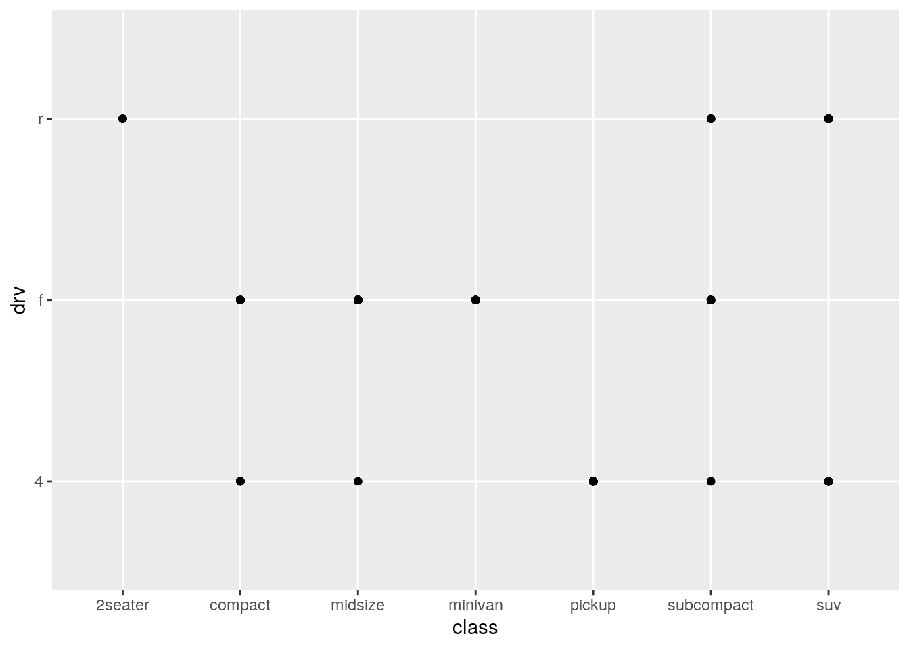

Data visualization with ggplot2
John Blischak
2019-09-25
Last updated: 2019-09-25
Checks: 7 0
Knit directory: wflow-r4ds/
This reproducible R Markdown analysis was created with workflowr (version 1.4.0). The Checks tab describes the reproducibility checks that were applied when the results were created. The Past versions tab lists the development history.
Great! Since the R Markdown file has been committed to the Git repository, you know the exact version of the code that produced these results.
Great job! The global environment was empty. Objects defined in the global environment can affect the analysis in your R Markdown file in unknown ways. For reproduciblity it’s best to always run the code in an empty environment.
The command set.seed(20190925) was run prior to running the code in the R Markdown file. Setting a seed ensures that any results that rely on randomness, e.g. subsampling or permutations, are reproducible.
Great job! Recording the operating system, R version, and package versions is critical for reproducibility.
Nice! There were no cached chunks for this analysis, so you can be confident that you successfully produced the results during this run.
Great job! Using relative paths to the files within your workflowr project makes it easier to run your code on other machines.
Great! You are using Git for version control. Tracking code development and connecting the code version to the results is critical for reproducibility. The version displayed above was the version of the Git repository at the time these results were generated.
Note that you need to be careful to ensure that all relevant files for the analysis have been committed to Git prior to generating the results (you can use wflow_publish or wflow_git_commit). workflowr only checks the R Markdown file, but you know if there are other scripts or data files that it depends on. Below is the status of the Git repository when the results were generated:
Ignored files:
Ignored: .Rhistory
Ignored: .Rproj.user/
Note that any generated files, e.g. HTML, png, CSS, etc., are not included in this status report because it is ok for generated content to have uncommitted changes.
These are the previous versions of the R Markdown and HTML files. If you’ve configured a remote Git repository (see ?wflow_git_remote), click on the hyperlinks in the table below to view them.
| File | Version | Author | Date | Message |
|---|---|---|---|---|
| Rmd | 6d7cda4 | John Blischak | 2019-09-25 | Finish chp 1 exercises |
| html | e66f7d1 | John Blischak | 2019-09-25 | Build site. |
| html | 7213610 | John Blischak | 2019-09-25 | Build site. |
| Rmd | 25ccd00 | John Blischak | 2019-09-25 | Start chapter 1 exercises on ggplot2 |
Setup
library(tidyverse)── Attaching packages ──────────────────────────────────────────────────────────────────────────────────── tidyverse 1.2.1 ──✔ ggplot2 3.2.1 ✔ purrr 0.3.2
✔ tibble 2.1.3 ✔ dplyr 0.8.3
✔ tidyr 1.0.0 ✔ stringr 1.4.0
✔ readr 1.3.1 ✔ forcats 0.4.0── Conflicts ─────────────────────────────────────────────────────────────────────────────────────── tidyverse_conflicts() ──
✖ dplyr::filter() masks stats::filter()
✖ dplyr::lag() masks stats::lag()library(maps)
Attaching package: 'maps'The following object is masked from 'package:purrr':
maplibrary(mapproj)
data(mpg)
head(mpg)# A tibble: 6 x 11
manufacturer model displ year cyl trans drv cty hwy fl class
<chr> <chr> <dbl> <int> <int> <chr> <chr> <int> <int> <chr> <chr>
1 audi a4 1.8 1999 4 auto(… f 18 29 p comp…
2 audi a4 1.8 1999 4 manua… f 21 29 p comp…
3 audi a4 2 2008 4 manua… f 20 31 p comp…
4 audi a4 2 2008 4 auto(… f 21 30 p comp…
5 audi a4 2.8 1999 6 auto(… f 16 26 p comp…
6 audi a4 2.8 1999 6 manua… f 18 26 p comp…data(diamonds)
head(diamonds)# A tibble: 6 x 10
carat cut color clarity depth table price x y z
<dbl> <ord> <ord> <ord> <dbl> <dbl> <int> <dbl> <dbl> <dbl>
1 0.23 Ideal E SI2 61.5 55 326 3.95 3.98 2.43
2 0.21 Premium E SI1 59.8 61 326 3.89 3.84 2.31
3 0.23 Good E VS1 56.9 65 327 4.05 4.07 2.31
4 0.290 Premium I VS2 62.4 58 334 4.2 4.23 2.63
5 0.31 Good J SI2 63.3 58 335 4.34 4.35 2.75
6 0.24 Very Good J VVS2 62.8 57 336 3.94 3.96 2.48First steps
p. 6
Run
ggplot(data = mpg). What do you see?
A blank plot
ggplot(data = mpg)
| Version | Author | Date |
|---|---|---|
| 7213610 | John Blischak | 2019-09-25 |
How many rows are in
mpg? How many columns?
nrow(mpg)[1] 234ncol(mpg)[1] 11What does the
drvvariable describe? Read the help for?mpgto find out.
?mpgdrv: f = front-wheel drive, r = rear wheel drive, 4 = 4wd
Make a scatterplot of
hwyvscyl.
ggplot(data = mpg) +
geom_point(aes(x = cyl, y = hwy))
| Version | Author | Date |
|---|---|---|
| 7213610 | John Blischak | 2019-09-25 |
What happens if you make a scatterplot of
classvsdrv? Why is the plot not useful?
ggplot(data = mpg) +
geom_point(aes(x = class, y = drv))
| Version | Author | Date |
|---|---|---|
| 7213610 | John Blischak | 2019-09-25 |
Because the points are overplotted, it doesn’t provide any information on the number of cars with each combination.
table(mpg$class, mpg$drv)
4 f r
2seater 0 0 5
compact 12 35 0
midsize 3 38 0
minivan 0 11 0
pickup 33 0 0
subcompact 4 22 9
suv 51 0 11Aesthetic mappings
p. 12
What’s gone wrong with this code? Why are the points not blue?
ggplot(data = mpg) +
geom_point(mapping = aes(x = displ, y = hwy, color = "blue"))
| Version | Author | Date |
|---|---|---|
| 7213610 | John Blischak | 2019-09-25 |
Defining color inside of aes() maps the color variable to the character vector c("blue"). Since it only has one unique value, there is only one entry in the legend. Furthermore it is defined the first default color (more on this below).
To turn all the points uniformly to blue, define color outside of aes().
ggplot(data = mpg) +
geom_point(mapping = aes(x = displ, y = hwy), color = "blue")
| Version | Author | Date |
|---|---|---|
| 7213610 | John Blischak | 2019-09-25 |
The default colors are determined by running scale_color_hue():
scales::show_col(scale_color_hue()$palette(1))
| Version | Author | Date |
|---|---|---|
| 7213610 | John Blischak | 2019-09-25 |
p <- ggplot(data = mpg) +
geom_point(mapping = aes(x = displ, y = hwy, color = "blue"))
unique(ggplot_build(p)$data[[1]]$colour)[1] "#F8766D"https://stackoverflow.com/a/8197706 https://stackoverflow.com/a/25211125
Which variables in
mpgare categorical? Which variables are continuous? (Hint: type?mpgto read the documentation for the dataset). How can you see this information when you runmpg?
str(mpg)Classes 'tbl_df', 'tbl' and 'data.frame': 234 obs. of 11 variables:
$ manufacturer: chr "audi" "audi" "audi" "audi" ...
$ model : chr "a4" "a4" "a4" "a4" ...
$ displ : num 1.8 1.8 2 2 2.8 2.8 3.1 1.8 1.8 2 ...
$ year : int 1999 1999 2008 2008 1999 1999 2008 1999 1999 2008 ...
$ cyl : int 4 4 4 4 6 6 6 4 4 4 ...
$ trans : chr "auto(l5)" "manual(m5)" "manual(m6)" "auto(av)" ...
$ drv : chr "f" "f" "f" "f" ...
$ cty : int 18 21 20 21 16 18 18 18 16 20 ...
$ hwy : int 29 29 31 30 26 26 27 26 25 28 ...
$ fl : chr "p" "p" "p" "p" ...
$ class : chr "compact" "compact" "compact" "compact" ...Map a continuous variable to
color,size, andshape. How do these aesthetics behave differently for categorical vs. continuous variables?
p <- ggplot(data = mpg, mapping = aes(x = displ, y = hwy))
p + geom_point(aes(color = class))
| Version | Author | Date |
|---|---|---|
| 7213610 | John Blischak | 2019-09-25 |
p + geom_point(aes(color = cty))
| Version | Author | Date |
|---|---|---|
| 7213610 | John Blischak | 2019-09-25 |
p + geom_point(aes(size = class))Warning: Using size for a discrete variable is not advised.
| Version | Author | Date |
|---|---|---|
| 7213610 | John Blischak | 2019-09-25 |
p + geom_point(aes(size = cty))
| Version | Author | Date |
|---|---|---|
| 7213610 | John Blischak | 2019-09-25 |
p + geom_point(aes(shape = class))Warning: The shape palette can deal with a maximum of 6 discrete values
because more than 6 becomes difficult to discriminate; you have 7.
Consider specifying shapes manually if you must have them.Warning: Removed 62 rows containing missing values (geom_point).
| Version | Author | Date |
|---|---|---|
| 7213610 | John Blischak | 2019-09-25 |
tools::assertError(print(p + geom_point(aes(shape = cty))), verbose = TRUE)Asserted error: A continuous variable can not be mapped to shape
| Version | Author | Date |
|---|---|---|
| 7213610 | John Blischak | 2019-09-25 |
Note: Have to use print() to catch error because the error is generated by print.ggplot().
https://stackoverflow.com/a/11782043
What happens if you map the same variable to multiple aesthetics?
ggplot(data = mpg) +
geom_point(mapping = aes(x = displ, y = hwy, color = class, size = class))Warning: Using size for a discrete variable is not advised.
| Version | Author | Date |
|---|---|---|
| 7213610 | John Blischak | 2019-09-25 |
Both aesthetics are applied.
What does the
strokeaesthetic do? What shapes does it work with? (Hint: use?geom_point)
?geom_pointstroke controls the width of the border (for shapes that have a border).
ggplot(data = mpg) +
geom_point(mapping = aes(x = displ, y = hwy),
shape = 21, fill = "white", color = "red", stroke = 3)
| Version | Author | Date |
|---|---|---|
| 7213610 | John Blischak | 2019-09-25 |
What happens if you map an aesthetic to something other than a variable name, like
aes(colour = displ < 5)? Note, you’ll also need to specify x and y.
ggplot(data = mpg) +
geom_point(mapping = aes(x = displ, y = hwy, colour = displ < 5))
| Version | Author | Date |
|---|---|---|
| 7213610 | John Blischak | 2019-09-25 |
This is analogous to the color = "blue" question above. Since a logical vector has two unique values, TRUE and FALSE, the points are colored using the first two default colors. Note that since the x-axis is also displ, the color is providing redundant information in this plot.
Facets
p. 15
What happens if you facet on a continuous variable?
It creates a separate facet for each unique value of the continuous variable:
ggplot(data = mpg) +
geom_point(mapping = aes(x = displ, y = hwy)) +
facet_wrap(~ cty)
| Version | Author | Date |
|---|---|---|
| 7213610 | John Blischak | 2019-09-25 |
ggplot(data = mpg) +
geom_point(mapping = aes(x = displ, y = hwy)) +
facet_wrap(~ displ)
| Version | Author | Date |
|---|---|---|
| 7213610 | John Blischak | 2019-09-25 |
What do the empty cells in plot with
facet_grid(drv ~ cyl)mean? How do they relate to this plot?
ggplot(data = mpg) +
geom_point(mapping = aes(x = drv, y = cyl))
| Version | Author | Date |
|---|---|---|
| 7213610 | John Blischak | 2019-09-25 |
The data set does not include any cars with rear wheel drive and 4 or 5 cylinders.
What plots does the following code make? What does
.do?
ggplot(data = mpg) +
geom_point(mapping = aes(x = displ, y = hwy)) +
facet_grid(drv ~ .)
| Version | Author | Date |
|---|---|---|
| 7213610 | John Blischak | 2019-09-25 |
ggplot(data = mpg) +
geom_point(mapping = aes(x = displ, y = hwy)) +
facet_grid(. ~ cyl)
| Version | Author | Date |
|---|---|---|
| 7213610 | John Blischak | 2019-09-25 |
The . is a place holder for the rows or columns.
Take the first faceted plot in this section:
ggplot(data = mpg) +
geom_point(mapping = aes(x = displ, y = hwy)) +
facet_wrap(~ class, nrow = 2)
| Version | Author | Date |
|---|---|---|
| 7213610 | John Blischak | 2019-09-25 |
What are the advantages to using faceting instead of the colour aesthetic? What are the disadvantages? How might the balance change if you had a larger dataset?
ggplot(data = mpg) +
geom_point(mapping = aes(x = displ, y = hwy, color = class))
| Version | Author | Date |
|---|---|---|
| 7213610 | John Blischak | 2019-09-25 |
The facets make it easier to see the full shape of the distribution for each class. The disadvantage is that it makes it more difficult to directly compare across each class. With more cars, there would be an increased possibility of overplotting, makeing the faceting more advantageous.
Read
?facet_wrap. What doesnrowdo? What doesncoldo? What other options control the layout of the individual panels? Why doesn’tfacet_grid()havenrowandncolarguments?
?facet_wrapnrow controls the number of rows and ncol controls the number of columns. as.table determines the order of the facets. drop removes empty facets. dir controls horizontal or vertical ordering.
The number of rows and columns for facet_grid() are determined by the number of unique levels in the variables used for facetting.
When using
facet_grid()you should usually put the variable with more unique levels in the columns. Why?
I don’t feel that this is an obvious question. This answer states it is because screens tend to be wider than longer. But that makes a lot of assumptions. First, what if the variable has so many unique levels that it doesn’t fit well horizontally at a readable size on a smaller laptop screen. I personally find it easier to scroll vertically rather than horizontally. Also, I feel like this should be informed by the importance of the x versus y axis. Having more columns means it will be easier to compare the y-axis values. And having more rows means it will be easier to compare the x-axis values.
Geometric objects
p. 20
What geom would you use to draw a line chart? A boxplot? A histogram? An area chart?
- line chart -
geom_line() - boxplot -
geom_boxplot() - histogram -
geom_histogram() - area chart -
geom_area()
Run this code in your head and predict what the output will look like. Then, run the code in R and check your predictions.
Plots a separate smoothing line for each unique value of drv because it inherits the mapping from ggplot().
ggplot(data = mpg, mapping = aes(x = displ, y = hwy, color = drv)) +
geom_point() +
geom_smooth(se = FALSE)`geom_smooth()` using method = 'loess' and formula 'y ~ x'
Moving color = drv to geom_point() results in the points still being colored, but only one smoothing line.
ggplot(data = mpg, mapping = aes(x = displ, y = hwy)) +
geom_point(aes(color = drv)) +
geom_smooth(se = FALSE)`geom_smooth()` using method = 'loess' and formula 'y ~ x'What does
show.legend = FALSEdo? What happens if you remove it?
Why do you think I used it earlier in the chapter?
show.legend = FALSE omits the figure legend. It is useful for saving space, especially when showing multiple variations of a particular visualization.
ggplot(data = mpg, mapping = aes(x = displ, y = hwy, color = drv)) +
geom_smooth(se = FALSE, show.legend = FALSE)`geom_smooth()` using method = 'loess' and formula 'y ~ x'What does the
seargument togeom_smooth()do?
Displays the confidence interval associated with the smoothing method applied.
Will these two graphs look different? Why/why not?
No. The first uses inheritance and the second uses duplication, but they both result in the same data and mapping in both layers.
ggplot(data = mpg, mapping = aes(x = displ, y = hwy)) +
geom_point() +
geom_smooth()`geom_smooth()` using method = 'loess' and formula 'y ~ x'
ggplot() +
geom_point(data = mpg, mapping = aes(x = displ, y = hwy)) +
geom_smooth(data = mpg, mapping = aes(x = displ, y = hwy))`geom_smooth()` using method = 'loess' and formula 'y ~ x'Recreate the R code necessary to generate the following graphs.
ggplot(data = mpg, mapping = aes(x = displ, y = hwy)) +
geom_point() +
geom_smooth(se = FALSE)`geom_smooth()` using method = 'loess' and formula 'y ~ x'ggplot(data = mpg, mapping = aes(x = displ, y = hwy)) +
geom_point() +
geom_smooth(mapping = aes(group = drv), se = FALSE)`geom_smooth()` using method = 'loess' and formula 'y ~ x'ggplot(data = mpg, mapping = aes(x = displ, y = hwy, color = drv)) +
geom_point() +
geom_smooth(se = FALSE)`geom_smooth()` using method = 'loess' and formula 'y ~ x'ggplot(data = mpg, mapping = aes(x = displ, y = hwy)) +
geom_point(mapping = aes(color = drv)) +
geom_smooth(se = FALSE)`geom_smooth()` using method = 'loess' and formula 'y ~ x'
ggplot(data = mpg, mapping = aes(x = displ, y = hwy)) +
geom_point(mapping = aes(color = drv)) +
geom_smooth(mapping = aes(linetype = drv), se = FALSE)`geom_smooth()` using method = 'loess' and formula 'y ~ x'ggplot(data = mpg, mapping = aes(x = displ, y = hwy, color = drv)) +
geom_point()Statistical transformations
p. 26
What is the default geom associated with
stat_summary()? How could you rewrite the previous plot to use that geom function instead of the stat function?
The default geom associated with stat_summary() is geom_pointrange():
formals(stat_summary)$geom[1] "pointrange"Original using stat_summary() with the default of geom_pointrange():
ggplot(data = diamonds) +
stat_summary(
mapping = aes(x = cut, y = depth),
fun.ymin = min,
fun.ymax = max,
fun.y = median
)Alternative using geom_pointrange() and specifying stat = "summary":
ggplot(data = diamonds) +
geom_pointrange(mapping = aes(x = cut, y = depth), stat = "summary",
fun.ymin = min, fun.ymax = max, fun.y = median)
What does
geom_col()do? How is it different togeom_bar()?
geom_col() uses stat = "identity", so the height of the bar is equal to the exact value of y. geom_bar() uses stat = "count", so the height of the bar is equal to the number of observations of x.
ggplot(data = diamonds) +
geom_bar(mapping = aes(x = cut))diamonds %>%
group_by(cut) %>%
summarize(mean_price = mean(price)) %>%
ggplot() +
geom_col(mapping = aes(x = cut, y = mean_price))Most geoms and stats come in pairs that are almost always used in concert. Read through the documentation and make a list of all the pairs. What do they have in common?
What variables does
stat_smooth()compute? What parameters control its behaviour?
stat_smooth() computes the predicted value (y), lower CI bound to plot (ymin), upper CI bound to plot (ymax), and standard error se.
Its behavior is controlled by method, formula, and se. Furthermore, the arguments n, span, fullrange, level, and method.args can be passed to stat_smooth()
p <- ggplot(data = diamonds) +
geom_smooth(mapping = aes(x = carat, y = price), level = 0.99) # default is 0.95
y <- ggplot_build(p)$data[[1]]`geom_smooth()` using method = 'gam' and formula 'y ~ s(x, bs = "cs")'unique((y$ymax - y$ymin) / y$se) [1] 5.151659 5.151659 5.151659 5.151659 5.151659 5.151659 5.151659
[8] 5.151659 5.151659 5.151659 5.151659 5.151659 5.151659 5.151659
[15] 5.151659 5.151659 5.151659 5.151659 5.151659 5.151659 5.151659
[22] 5.151659 5.151659 5.151659 5.151659 5.151659 5.151659 5.151659
[29] 5.151659 5.151659 5.151659 5.151659 5.151659 5.151659 5.151659
[36] 5.151659 5.151659 5.151659 5.151659 5.151659 5.151659 5.151659
[43] 5.151659 5.151659In our proportion bar chart, we need to set
group = 1. Why? In other words what is the problem with these two graphs?
ggplot(data = diamonds) +
geom_bar(mapping = aes(x = cut, y = ..prop..))ggplot(data = diamonds) +
geom_bar(mapping = aes(x = cut, fill = color, y = ..prop..))This is strange behavior. I’m unclear why it is the default1. The proportion is calculated for each group, and thus is always equal to 1.
p1 <- ggplot(data = diamonds) +
geom_bar(mapping = aes(x = cut, y = ..prop..))
y1 <- ggplot_build(p1)$data[[1]]
y1 y count prop x PANEL group ymin ymax xmin xmax colour fill size
1 1 1610 1 1 1 1 0 1 0.55 1.45 NA grey35 0.5
2 1 4906 1 2 1 2 0 1 1.55 2.45 NA grey35 0.5
3 1 12082 1 3 1 3 0 1 2.55 3.45 NA grey35 0.5
4 1 13791 1 4 1 4 0 1 3.55 4.45 NA grey35 0.5
5 1 21551 1 5 1 5 0 1 4.55 5.45 NA grey35 0.5
linetype alpha
1 1 NA
2 1 NA
3 1 NA
4 1 NA
5 1 NABy hardcoding group = 1, all the counts are treated aas part of the same group, and thus the proportions are from the total.
p2 <- ggplot(data = diamonds) +
geom_bar(mapping = aes(x = cut, y = ..prop.., group = 1))
y2 <- ggplot_build(p2)$data[[1]]
y2 y count prop x group PANEL ymin ymax xmin xmax
1 0.02984798 1610 0.02984798 1 1 1 0 0.02984798 0.55 1.45
2 0.09095291 4906 0.09095291 2 1 1 0 0.09095291 1.55 2.45
3 0.22398962 12082 0.22398962 3 1 1 0 0.22398962 2.55 3.45
4 0.25567297 13791 0.25567297 4 1 1 0 0.25567297 3.55 4.45
5 0.39953652 21551 0.39953652 5 1 1 0 0.39953652 4.55 5.45
colour fill size linetype alpha
1 NA grey35 0.5 1 NA
2 NA grey35 0.5 1 NA
3 NA grey35 0.5 1 NA
4 NA grey35 0.5 1 NA
5 NA grey35 0.5 1 NAPosition adjustments
p. 31
What is the problem with this plot? How could you improve it?
ggplot(data = mpg, mapping = aes(x = cty, y = hwy)) +
geom_point()Overplotting. Improve by jitterring the points.
ggplot(data = mpg, mapping = aes(x = cty, y = hwy)) +
geom_point(position = "jitter")What parameters to
geom_jitter()control the amount of jittering?
width and height, which are passed to position_jitter().
Compare and contrast
geom_jitter()withgeom_count().
Alternative for overplotting. geom_count() counts the number of points at each position and then maps the count to the size of the point.
ggplot(data = mpg, mapping = aes(x = cty, y = hwy)) +
geom_count()Thus mapping it in combination with the size aesthetic is a disaster.
table(mpg$cyl)
4 5 6 8
81 4 79 70 ggplot(data = mpg, mapping = aes(x = cty, y = hwy)) +
geom_count(mapping = aes(size = cyl))What’s the default position adjustment for
geom_boxplot()? Create a visualisation of thempgdataset that demonstrates it.
The default is to use position_dodge2(), which is designed specifically for boxplots.
formals(geom_boxplot)$position[1] "dodge2"At least for this example, even when allowing variable width via varwidth, "dodge"is able to display the bboxplots just like "dodge2".
ggplot(data = mpg) +
geom_boxplot(mapping = aes(x = class, y = hwy))ggplot(data = mpg) +
geom_boxplot(mapping = aes(x = class, y = hwy), varwidth = TRUE)
ggplot(data = mpg) +
geom_boxplot(mapping = aes(x = class, y = hwy), varwidth = TRUE,
position = "dodge")Coordinate systems
Turn a stacked bar chart into a pie chart using
coord_polar().
stacked <- ggplot(data = diamonds) +
geom_bar(mapping = aes(x = cut, fill = clarity))
stackedstacked + coord_polar()What does
labs()do? Read the documentation.
Adds labels like the title, subtitle, x-axis label, and y-axis label.
What’s the difference between
coord_quickmap()andcoord_map()?
coord_map() requires the package mapproj and projects the spherical earth onto a 2D plane. coord_quickmap() is a quicker approximation, and thus works best for areas near the equator.
nz <- map_data("nz")
ggplot(nz, aes(long, lat, group = group)) +
geom_polygon(fill = "white", colour = "black")ggplot(nz, aes(long, lat, group = group)) +
geom_polygon(fill = "white", colour = "black") +
coord_quickmap()ggplot(nz, aes(long, lat, group = group)) +
geom_polygon(fill = "white", colour = "black") +
coord_map()What does the plot below tell you about the relationship between city and highway mpg? Why is
coord_fixed()important? What doesgeom_abline()do?
ggplot(data = mpg, mapping = aes(x = cty, y = hwy)) +
geom_point() +
geom_abline() +
coord_fixed()For each car, highway mpg is always better than city mpg. geom_abline() adds a line with a given slope and intercept. The default is the y=x line with intercept = 0 and slope = 1.
coord_fixed() maintains consistent spacing on both axes. Doing so ensures that the line is at a 45 degree angle, which is critical for the interpretation above.
Removing coord_fixed() results in the y=x line not being at a 45 degree angle.
ggplot(data = mpg, mapping = aes(x = cty, y = hwy)) +
geom_point() +
geom_abline()
sessionInfo()R version 3.6.1 (2019-07-05)
Platform: x86_64-pc-linux-gnu (64-bit)
Running under: Ubuntu 18.04.3 LTS
Matrix products: default
BLAS: /usr/lib/x86_64-linux-gnu/atlas/libblas.so.3.10.3
LAPACK: /usr/lib/x86_64-linux-gnu/atlas/liblapack.so.3.10.3
locale:
[1] LC_CTYPE=en_US.UTF-8 LC_NUMERIC=C
[3] LC_TIME=en_US.UTF-8 LC_COLLATE=en_US.UTF-8
[5] LC_MONETARY=en_US.UTF-8 LC_MESSAGES=en_US.UTF-8
[7] LC_PAPER=en_US.UTF-8 LC_NAME=C
[9] LC_ADDRESS=C LC_TELEPHONE=C
[11] LC_MEASUREMENT=en_US.UTF-8 LC_IDENTIFICATION=C
attached base packages:
[1] stats graphics grDevices utils datasets methods base
other attached packages:
[1] mapproj_1.2.6 maps_3.3.0 forcats_0.4.0 stringr_1.4.0
[5] dplyr_0.8.3 purrr_0.3.2 readr_1.3.1 tidyr_1.0.0
[9] tibble_2.1.3 ggplot2_3.2.1 tidyverse_1.2.1
loaded via a namespace (and not attached):
[1] tidyselect_0.2.5 xfun_0.9 reshape2_1.4.3
[4] splines_3.6.1 haven_2.1.1 lattice_0.20-38
[7] colorspace_1.4-1 vctrs_0.2.0 generics_0.0.2
[10] viridisLite_0.3.0 htmltools_0.3.6 mgcv_1.8-29
[13] yaml_2.2.0 utf8_1.1.4 rlang_0.4.0
[16] pillar_1.4.2 glue_1.3.1 withr_2.1.2
[19] modelr_0.1.5 readxl_1.3.1 plyr_1.8.4
[22] lifecycle_0.1.0 munsell_0.5.0 gtable_0.3.0
[25] workflowr_1.4.0 cellranger_1.1.0 rvest_0.3.4
[28] evaluate_0.14 labeling_0.3 knitr_1.25
[31] fansi_0.4.0 broom_0.5.2 Rcpp_1.0.2
[34] scales_1.0.0 backports_1.1.4 jsonlite_1.6
[37] fs_1.3.1 hms_0.5.1 digest_0.6.21
[40] stringi_1.4.3 grid_3.6.1 rprojroot_1.2
[43] cli_1.1.0 tools_3.6.1 magrittr_1.5
[46] lazyeval_0.2.2 crayon_1.3.4 whisker_0.4
[49] pkgconfig_2.0.2 zeallot_0.1.0 Matrix_1.2-17
[52] xml2_1.2.2 lubridate_1.7.4 assertthat_0.2.1
[55] rmarkdown_1.15 httr_1.4.1 rstudioapi_0.10
[58] R6_2.4.0 nlme_3.1-141 git2r_0.26.1
[61] compiler_3.6.1 Apparently it is for consistent behavior↩